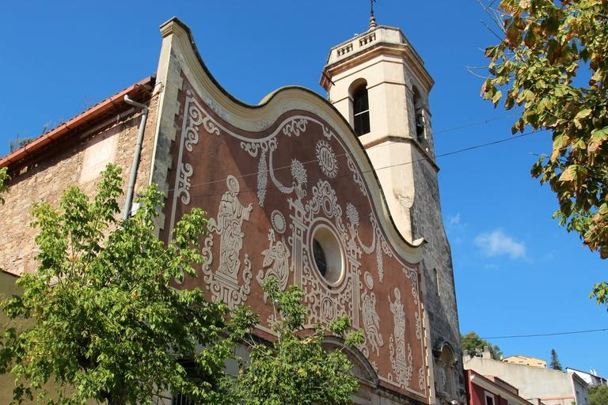

Visita · Vallirana
L'antiga església de Sant Mateu de Vallirana , situada prop de Can Julià , va ser enderrocada a principis del segle XlX i amb prou feines en queden algunes restes. Era una petita capella que ja…